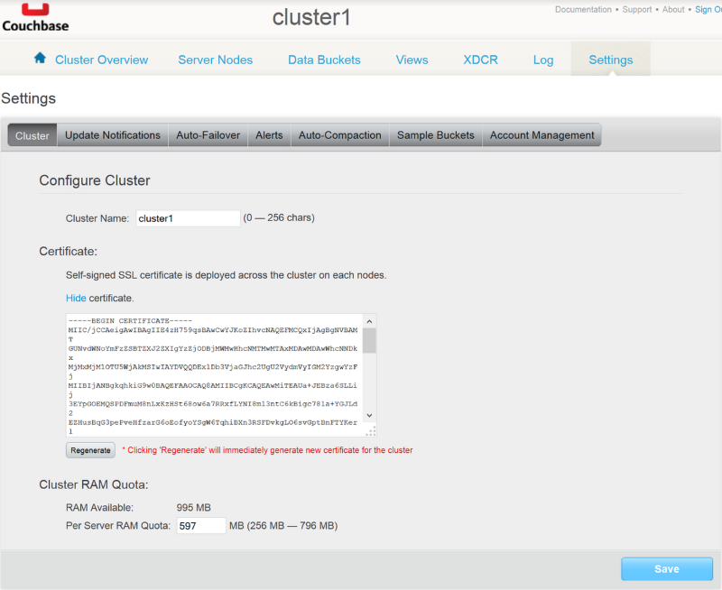
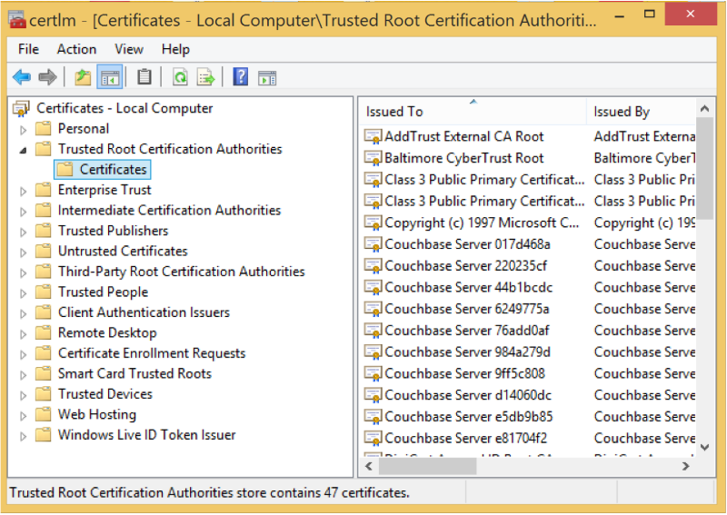

Configuring SSL
One of the core features of Couchbase Server is
support for encryption of data over the wire between the client and the cluster.
This is done through Secure Socket Layer (SSL) encryption. You can use SSL to secure the data that moves between your application and the cluster.
To use SSL you need to install an SSL certificate obtained form Couchbase Server on your application server and then configure the client.
Installing the SSL certificate
To obtain and install the SSL certificate:
- Open a browser and navigate to the Couchbase Administration Console of the cluster you want your client to connect to.
- Click .
- In the Configuration section, click Show to display the certificate. 
- Copy the entire content of the certificate and store it in a file with a .crt extension on the application server you want to install the certificate on.
- After you have the certificate on the application server, you need to import it into the local computer certificate store. On Windows, you can do this by using the certificate MMC snap-in, certlm. 
- Under the Trusted Root Certification Authorities root node, right-click .
- Follow the wizard to import the certificate you stored on disk.